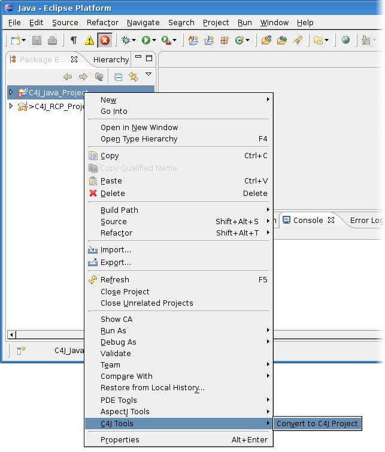
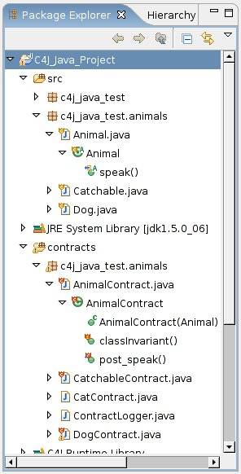
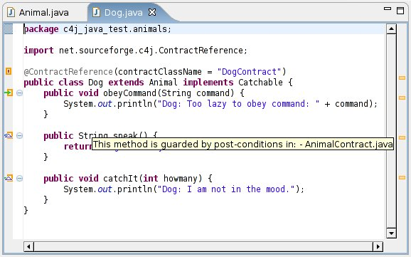

|
Easy enabling or disabling of C4J for
Java projects |
Enabling or disabling C4J for a specific Java project can be
done with only one click.

This will automatically add the needed dependencies to your
project and prepare it for more usability enhancements. |
|
Decoration of contracts, targets and their
methods |
You can choose to decorate your contracts and targets (contracted
classes) and their methods such that you can easily spot them.
Additionally, the decoration of methods gives you a hint if they are
guarded by pre and/or post conditions, if they belong to a target class, or
if they represent pre or post conditions in contracts.

|
|
Markers for class invariants and methods |
The Java Editor can now display markers for class invariants and
contracted methods along with a message telling you, which contract(s)
guard the specific method.

|